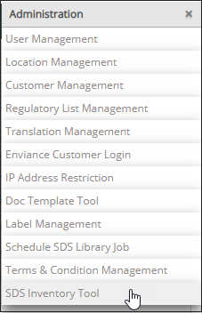
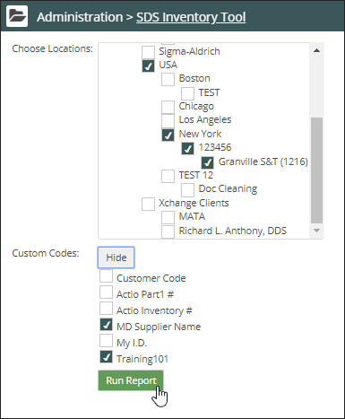
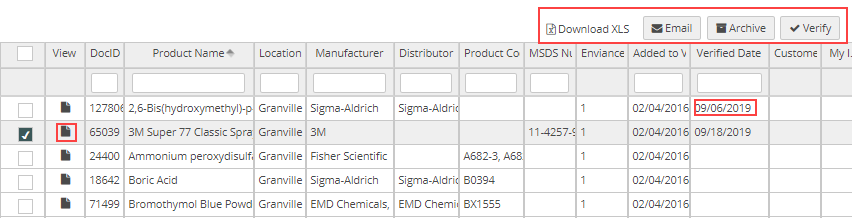

Click the drop-down arrow next to your name at the top right. Select Administration from the menu.


The SDS Inventory Tool allows users to manage Safety Data Sheets location inventory by creating a report which:
To create a report:
Note: To create and manage an inventory report, you must be an Account Administrator.
Click the drop-down arrow next to your name at the top right. Select Administration from the menu.


Click Run Report to generate a report with active Safety Data Sheets.

In the report:
Verify: To verify that your location inventory matches the SDS Vault inventory, select the product and then click Verify. The Verified window opens. Click OK. The verified date is added to the Inventory Tool report and to the Product List Vault report.
Archive: To archive a product that is not in the SDS Vault inventory, click Archive. You can select multiple products to archive at the same time.